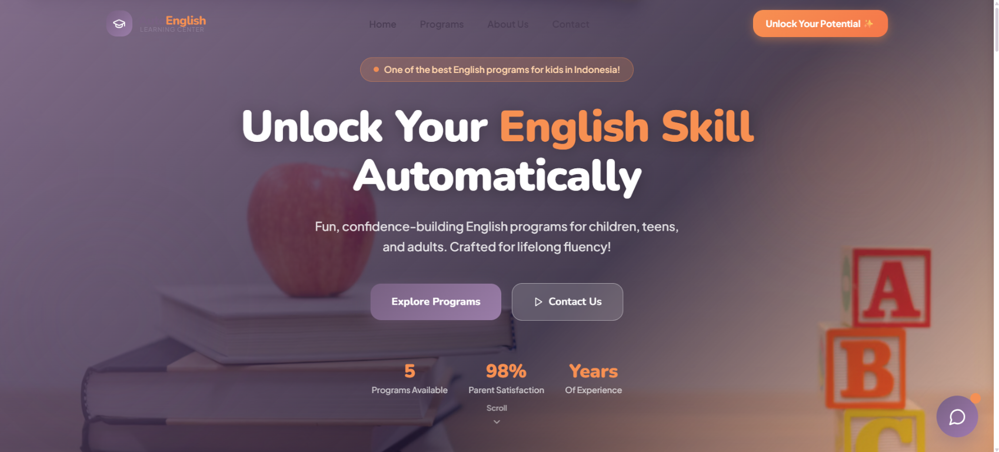

AutoEnglish
Website promosi untuk pusat belajar bahasa Inggris bagi anak-anak, remaja, dan orang dewasa. Website ini memperkenalkan program belajar, filosofi pengajaran, galeri kelas, serta informasi kontak dan pendaftaran. Auto AI membantu menjawab pertanyaan umum tentang program, harga, dan lokasi.
- React
- TypeScript
- Vite
- Tailwind CSS
- Framer Motion